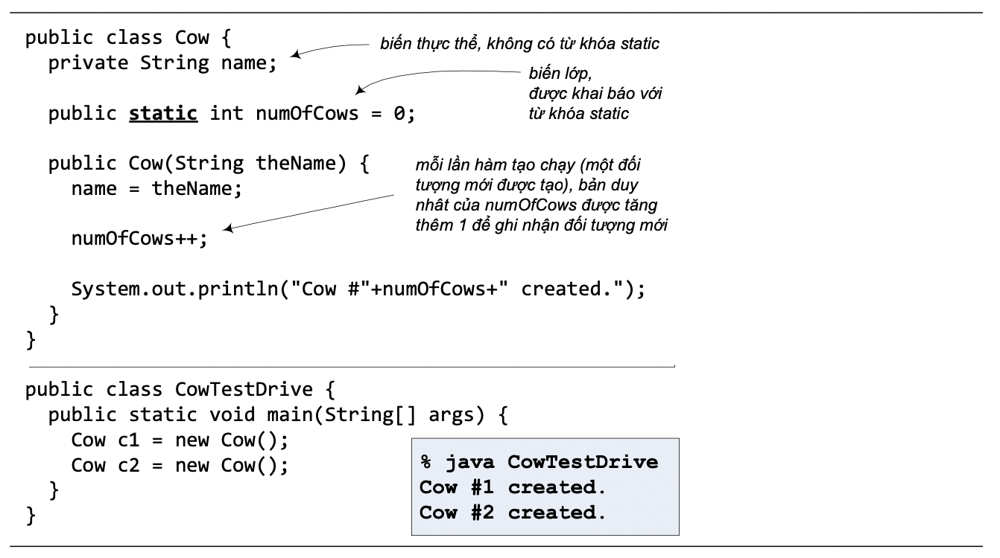
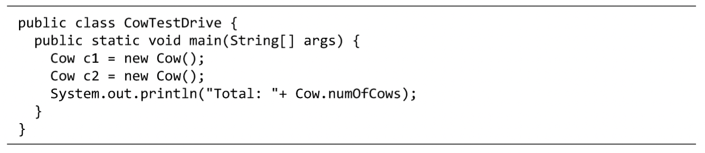

Đôi khi, ta muốn một lớp có những biến dùng chung cho tất cả các đối tượng thuộc lớp đó. Ta gọi các biến dùng chung này là biến của lớp (class variable), hay gọi tắt là biến lớp. Chúng không gắn với bất cứ một đối tượng nào mà chỉ gắn với lớp đối tượng. Chúng được dùng chung cho tất cả các đối tượng trong lớp đó. Để phân biệt giữa biến thực thể và biến lớp khi khai báo trong định nghĩa lớp, ta dùng từ khóa static cho các biến lớp. Vì từ khóa đó nên biến lớp thường được gọi là biến static.
Lấy ví dụ trong Hình 10.1, bên cạnh biến thực thể name, lớp Cow còn có một biến lớp numOfCows với mục đích ghi lại số lượng các đối tượng Cow đã được tạo. Mỗi đối tượng Cow có một biến name của riêng nó, nhưng numOfCows thì chỉ có đúng một bản dùng chung cho tất cả các đối tượng Cow. numOfCows được khởi tạo bằng 0, mỗi lần một đối tượng Cow được tạo, biến này được tăng thêm 1 (tại hàm khởi tạo dành cho đối tượng đó) để ghi nhận rằng vừa có thêm một thực thể mới của lớp Cow.
Hình 10.1: Biến lớp - biến static.
Từ bên ngoài lớp, ta có thể dùng tên lớp để truy nhập biến static. Chẳng hạn, dùng Cow.numOfCows để truy nhập numOfCows:
